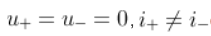
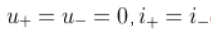
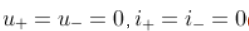
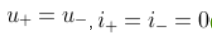

阅读序号1
理想运算放大器的开环放大倍数$A_{uo}$为？
无穷大
1
0
不定
理想运算放大器的开环放大倍数$A_{uo}$为？
无穷大
1
0
不定
理想运算放大器的输入电阻为？输出电阻为？
0，0
无穷大，无穷大
0，无穷大
无穷大，0
集成运算放大器能处理什么类型的信号？
仅交流信号
以上都不对
仅直流信号
交流信号和直流信号
集成运放工作在线性放大区，由理想工作条件得出两个重要规律是？




若要将幅度为$ \pm U_m$的矩形波转变为三角波，则应选用？
反向比例运算电路
积分运算电路
同相比例运算电路
微分运算电路
函数信号发生器需要交流量叠加直流输出时，需调节？
周期
同相位
偏移
幅值
分析集成运放的非线性应用电路时，不能使用的特性是？
都不对
虚短
差模输入电阻无穷大
虚断
单限电压比较器有（ ）个门限电压，滞回电压比较器有（ ）个门限电压。
2，2
1，2
2，1
1，1
当集成运放芯片的电源为正负对称电源供电时，不可把正、负电源极性接反或将输出端短路，否则会烧坏芯片。
在由运放组成的电路中，运放工作在非线性状态的电路是？
差值放大器
电压比较器
有源滤波器
反相放大器